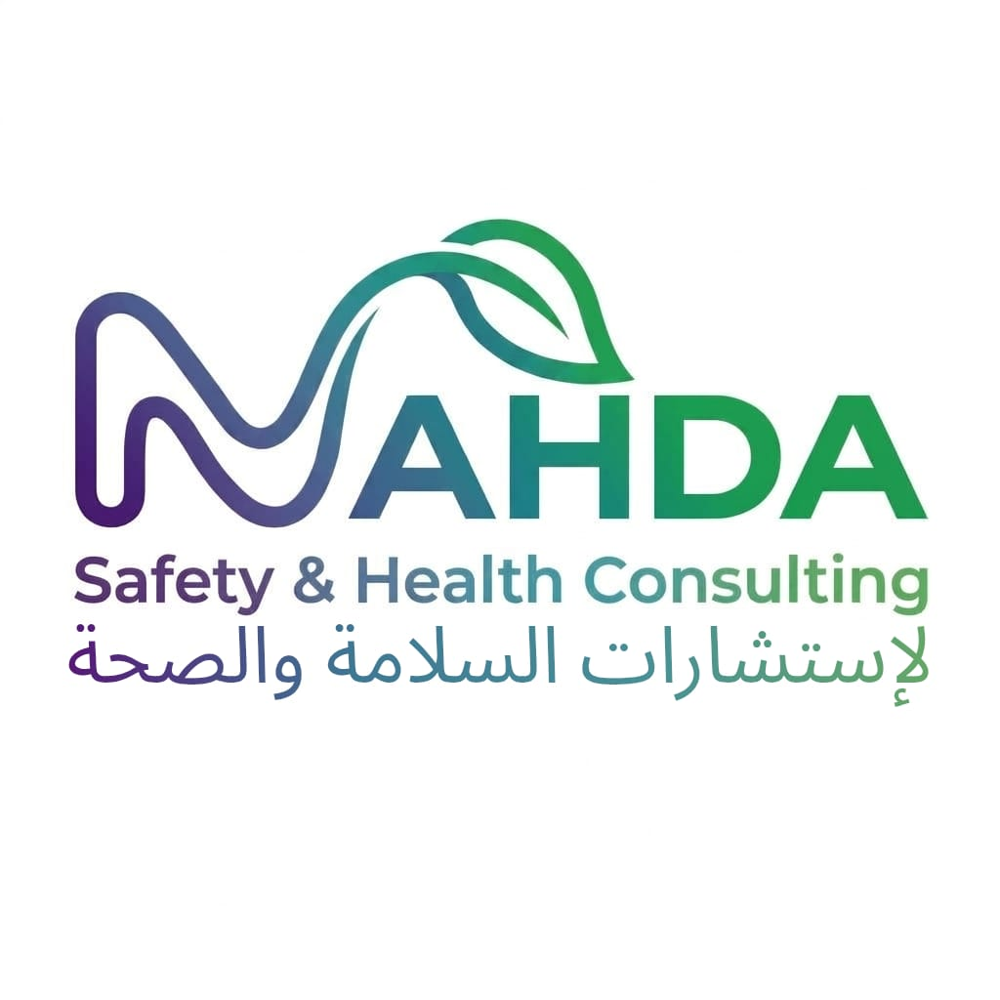

Health & Safety Consulting
Practical Health, Safety & Environment consultancy solutions for organizations
Corporate Profile
2026 - 2027
nahdasafety.com
Muscat, Sultanate of Oman
About Us
Nahda QHSE Solutions journey started in 2025 under founder Mr. Ali Amur Al Balushi to elevate Oman’s safety, health, and compliance performance with practical, regulation-ready support.
To deliver practical, modern HSE solutions that help Oman businesses strengthen compliance, reduce risk, improve performance, and build safer, more sustainable operations.
We help organizations strengthen HSE systems, improve compliance and reduce operational risk through practical consultancy, ISO implementation, HSE documentation, digital solutions, audits, inspections, environmental support and professional training.
— CEO, Nahda Safety & Health
“Every organization deserves a safer workplace, a healthier workforce and a sustainable future. At Nahda Safety & Health, we combine practical expertise, digital innovation and strong HSE leadership to help our clients move beyond compliance and achieve lasting performance.”
Our Services
Independent HSE audits, workplace inspections and compliance reviews to identify risks, close gaps and improve operational performance.
ISO-ready documentation and data systems for structured, easier compliance during regulatory audits.
Practical training programs in Oman: competency-focused courses, emergency drills, and awareness workshops to improve performance and safety.
End-to-end support for ISO certification in Oman: gap analysis, system documentation, training, and audit readiness.
Experienced HSE Professionals for Your Projects, providing expert on-site supervision and short-term or long-term safety oversight.
QHSE consultation in Oman — practical, audit-ready QHSE solutions: site inspections, ISO-ready documentation and measurable corrective action plans.
AI Consultant
Our AI assistant turns urgent safety queries into practical recommendations, compliance checkpoints, and sales-ready WhatsApp follow-up—so your team can close more clients with confidence.
AI Safety Score
Risk-rated advice
Speed to delivery
10x faster
compliant insight
100%
We embed robust safety cultures into organizations, ensuring every process aligns with the highest international standards of QHSE.
Our digital and on-ground experts provide rapid, actionable insights so you never have to guess when it comes to compliance and worker safety.
Reach our health and safety team for fast compliance guidance, onsite risk checks, or AI-driven safety planning. We respond promptly on WhatsApp and email.
contact@nahdasafety.com
+968 9250 0747
© 2026 Nahda Safety & Health. All rights reserved.